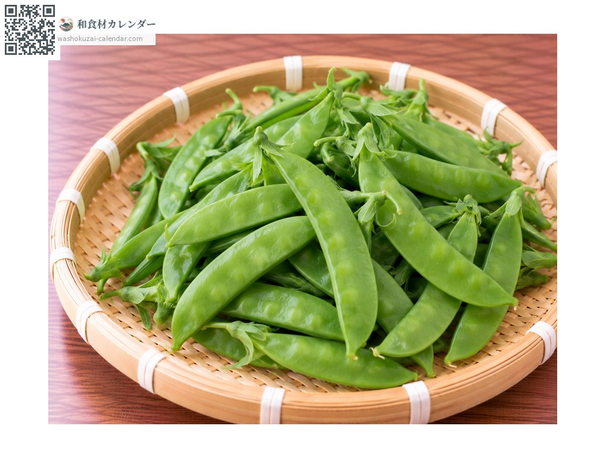
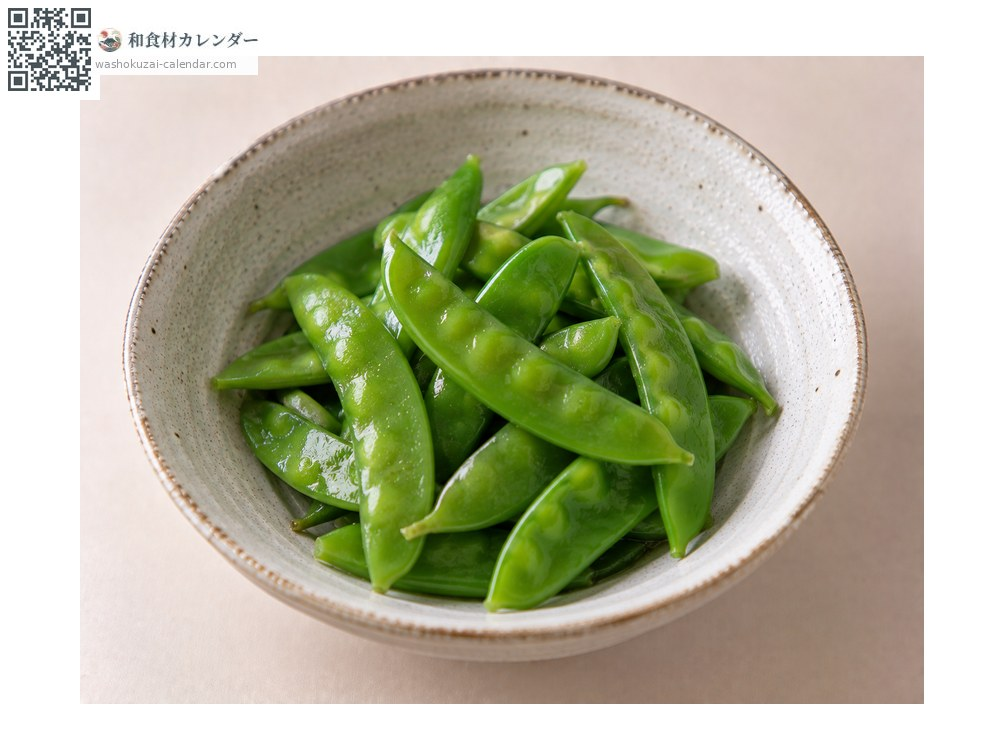
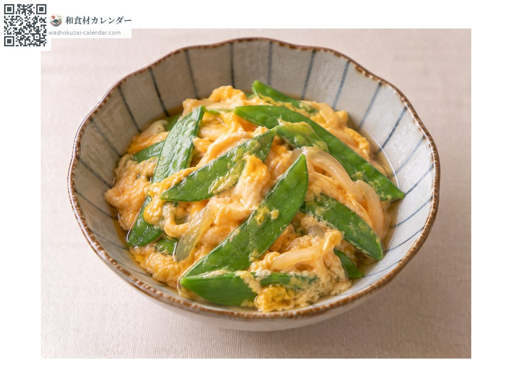
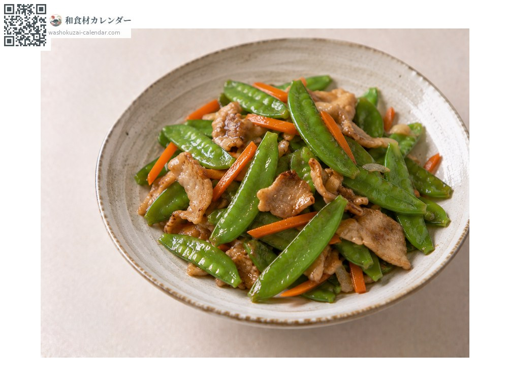
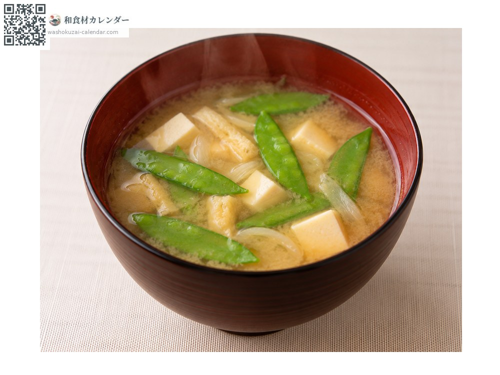

ผัก
ถั่วลันเตา
サヤエンドウ さやえんどう sayaendou
ชื่ออื่นsayaendou, sayaendo, kinusaya
อร่อยที่สุดในเดือน มี.ค., เม.ย., พ.ค.

ช่วงที่อร่อยที่สุด
ม.ค.
ก.พ.
มี.ค.
เม.ย.
พ.ค.
มิ.ย.
ก.ค.
ส.ค.
ก.ย.
ต.ค.
พ.ย.
ธ.ค.
ช่วงอร่อยที่สุดมีจำหน่าย
วิธีปรุง

ลวกน้ำเกลือ
ใช้แต่งสีอาหาร

ตุ๋นราดไข่
ตุ๋นน้ำดาชิแล้วราดไข่

ผัด
ผัดเร็ว ๆ

ซุปมิโซะ
ใส่เพื่อแต่งสี
วิธีเลือก
ฝักบางสีเขียวสด หนวดยังตั้งตรง เมล็ดยังไม่นูนเด่น
วิธีเก็บรักษา
ไม่ทนความแห้ง ใส่ถุงแล้วแช่เย็น ใช้ให้หมดใน 2-3 วัน
แหล่งผลิตหลัก
เกร็ดน่ารู้
กินทั้งฝักคือซายะเอนโด กินแต่เมล็ดคือถั่วลันเตาเขียว ส่วนที่กินได้ทั้งสองอย่างคือสแนปพี